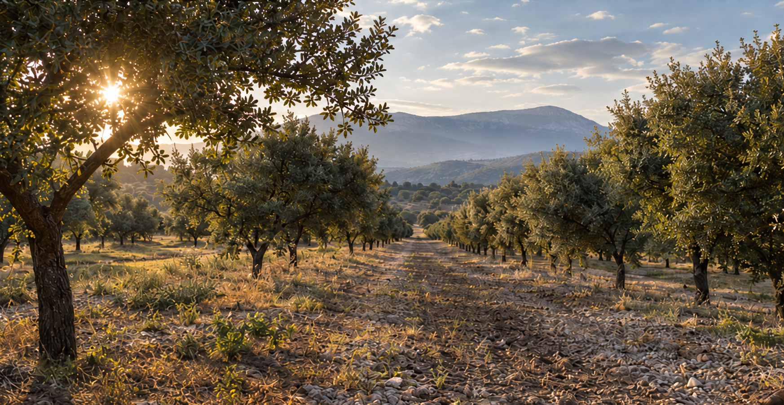
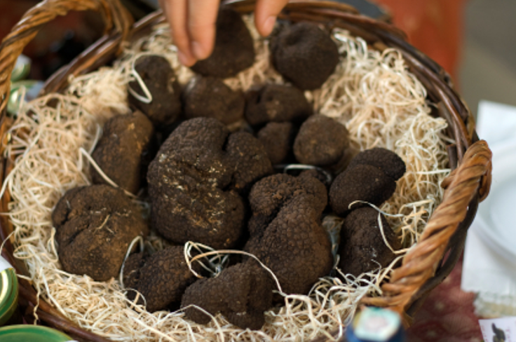
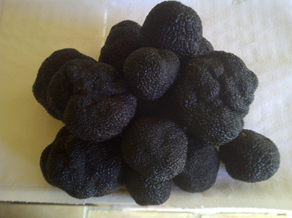
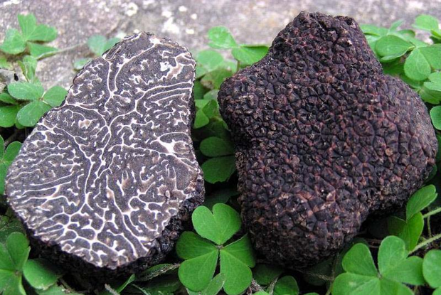
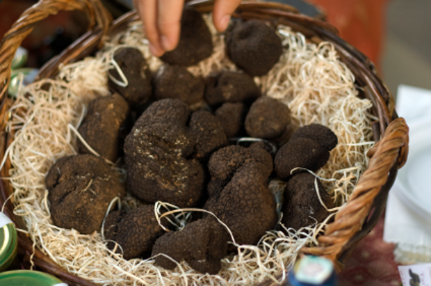
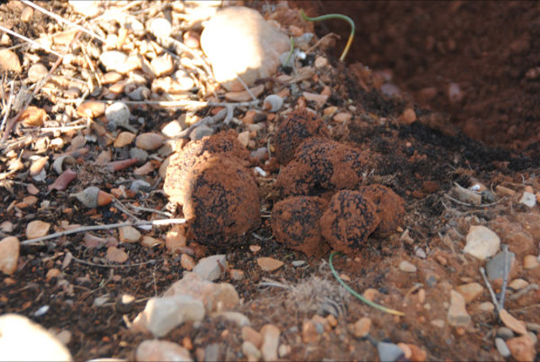
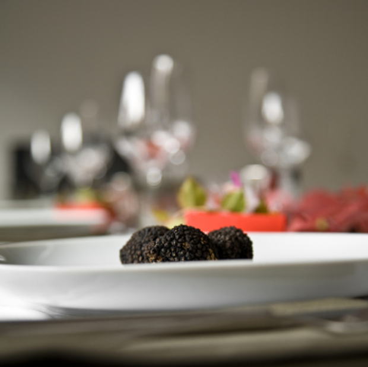
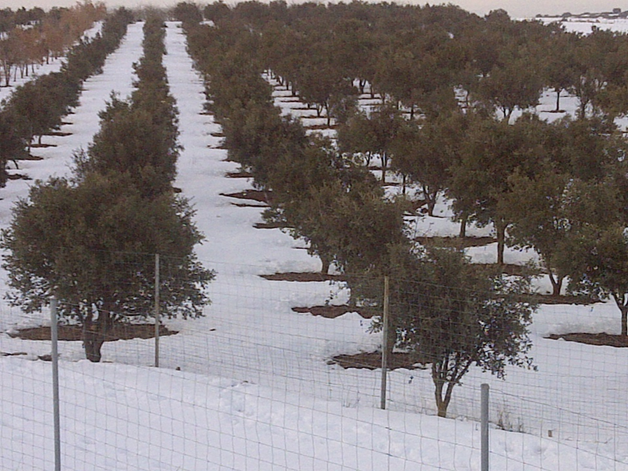

Small Round
More than 5 g up to 19 g.
FRESH BLACK TRUFFLE
Grown in Spain. From our own truffle fields.
Mid-November — Late March
DISCOVER
OUR FIELDS
Our Tuber melanosporum is grown in our own truffle fields in Spain. Being growers allows us to follow our truffles from the land through selection and preparation for our customers.
OUR LAND. OUR COMMITMENT.
TRUFFLES
Fresh Spanish black truffle with a deep aroma, carefully prepared for professional kitchens and specialist distribution.

HARVEST & SEASON
Our season follows the natural rhythm of the black truffle. Harvesting takes place from mid-November to late March, subject to conditions and maturity.
MID-NOVEMBER — LATE MARCH
TRUFFLES

More than 5 g up to 19 g.
Whole truffles from 20 g, classified according to quality criteria.
Whole Extra truffles from 20 g, differentiated by quality.
Washed truffle pieces from 20 g.
Other grades, sizes, preparations or formats can be studied on request.
QUALITY
Every truffle is individually selected before dispatch. A small inspection cut — known as canifage — allows us to assess the gleba, maturity and internal quality of each truffle before it is prepared for shipment.
EVERY TRUFFLE IS CHECKED. ONE BY ONE.

QUALITY

FOR PROFESSIONALS
Fresh Tuber melanosporum prepared according to your requirements.
FOR PROFESSIONALS
APPROX. 48H.
Europe & international markets. We maintain the cold chain from dispatch. Times depend on destination, customs and transport service.

FOR PROFESSIONALS
Fresh Tuber melanosporum for professionals.

ABOUT
For decades, our company has been dedicated to the world of truffles. Experience, product knowledge and close relationships with our customers define the way we work.
QUALITY AND SERVICE. ALWAYS.

CONTACT
Tell us about your requirements and our team will respond with the right format for your business.